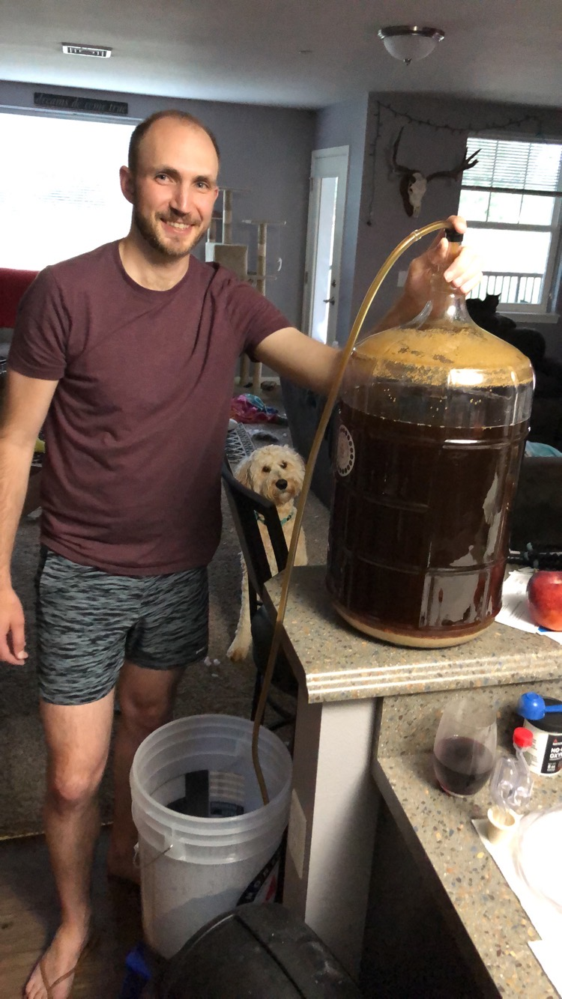

Beer

Homemade Beer
Beer is another simple beverage to make at home. It takes more time than mead because you have to boil
all the ingredients first, but there are still only a few ingredients. Those ingredients are water, malt, yeast,
and hops. There is a wide variety of beer styles out there, but it all comes down to fermenting a suger in water and
preserving and flavoring with hops.
Ingredients
- 5 pounds malt
- One packet of yeast of your choice
- 5 ounces of hops of your choice
- Enough water to make 5 gallons
- Priming sugar
Steps
- Bring 3 gallons of water to a simmer and add your malt, stirring to dissolve
- Once the malt is dissolved, bring to a rolling boil for 1 hour
- In the last 10 minutes of the boil add the hops
- Once the 1 hour is up, place the kettle you have been boiling in into an ice bath
- Once the liquid has cooled down to 80F, pour the liquid into a 5 gallon carboy
- Pour more fresh water into the carboy until you have 5 gallons total
- Pour in the yeast packet and put an airlock onto the carboy
- After 2 weeks the liquid will now have turned into beer and should be finished fermenting
- Add some priming sugar to your beer and bottle
- Allow the bottles to age for 2 weeks while the yeast carbonate the beer with the priming sugar
- Chill the beer and enjoy!